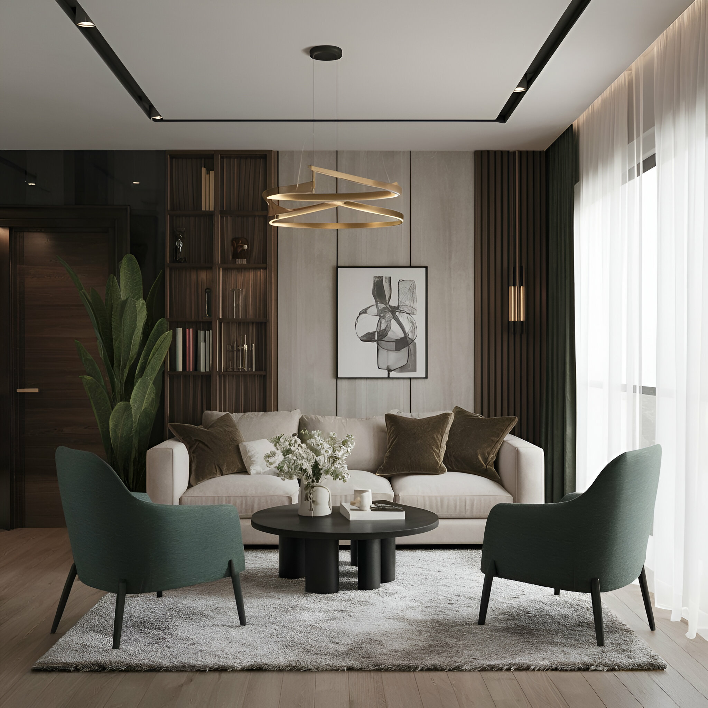

About Me
Hi, I'm Gillian Elizabeth Young, a passionate student studying Global Business and Digital Arts with an Economics minor at the University of Waterloo. My interests span from business innovation to digital creativity, and I am always exploring how to merge these fields in real-world applications.
I am enthusiastic about learning and collaborating, and I aim to bring a blend of creativity and strategic thinking into everything I do.

My Hobbies
Sewing
Sewing has always been a creative outlet for me. I love making clothing and accessories that reflect my style, and it gives me a sense of calm and satisfaction.
.jpeg)
Guitar
Playing guitar allows me to express myself musically. I enjoy learning new songs and experimenting with different styles of music.

Painting
I enjoy working with different mediums such as oil paint, watercolor, and acrylics. My favorite subjects are moody cityscapes with soft palettes and pops of color, as well as portraits, which I am working to improve.

Interior Design
Helping friends and family design their spaces is something I find incredibly rewarding. I love finding creative ways to optimize and transform spaces.
Aspirations & Goals
- Improve my cooking skills
- Read more books
- Gain experience as a barista
- Run a marathon
- Enhance my writing skills
- Advance my woodworking abilities to create unique furniture pieces, including creative side tables and desks
Favorites
- Animal: Fox
- Food: Shrimp Alfredo Pasta
- Color: Light Blue
- Activities: Running, volleyball, visiting cafes
- Weather: Rainy days
Contact
If you'd like to get in touch, feel free to send me an email at g6young@uwaterloo.ca.